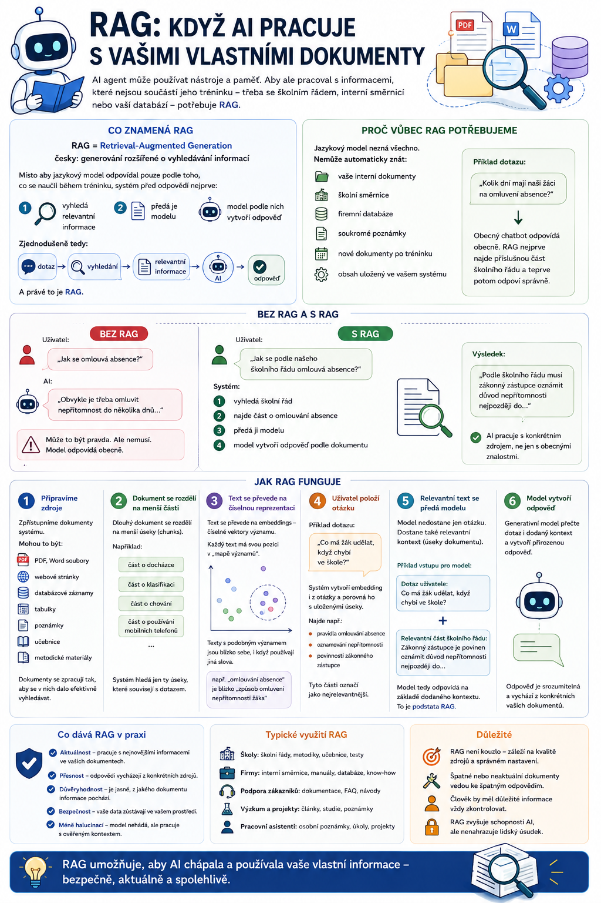

V předchozím článku jsme si ukázali, že AI agent může využívat různé druhy paměti. Jenže co když potřebujeme, aby pracoval s informacemi, které nejsou součástí jeho původního tréninku? Třeba se školním řádem, interní směrnicí, učebnicí, firemní dokumentací nebo vlastní databází. Právě k tomu slouží RAG.

Co znamená RAG
Zkratka RAG znamená:
Česky přibližně:
Název zní poněkud technicky, ale princip je překvapivě jednoduchý.
Místo aby jazykový model odpovídal pouze podle toho, co se naučil během tréninku, systém před odpovědí nejprve:
- vyhledá relevantní informace,
- předá je modelu,
- model podle nich vytvoří odpověď.
Zjednodušeně tedy:
A právě to je RAG.
Proč vůbec RAG potřebujeme
Jazykový model nezná všechno.
A už vůbec nemůže automaticky znát:
- vaše interní dokumenty,
- školní směrnice,
- firemní databáze,
- soukromé poznámky,
- nové dokumenty vytvořené po jeho tréninku,
- obsah uložený ve vašem vlastním systému.
Představme si dotaz:
„Kolik dní mají naši žáci na omluvení absence?“
Obecný AI chatbot může odpovědět podle běžné praxe nebo podle toho, co zná z jiných škol.
Jenže vy se neptáte na běžnou praxi.
Ptáte se na pravidla konkrétní školy.
Správná odpověď je tedy ukrytá například ve školním řádu.
RAG umožní systému nejprve tento dokument vyhledat, najít příslušnou část a teprve potom odpovědět.
Bez RAG a s RAG
Rozdíl si můžeme ukázat jednoduše.
Bez RAG
Uživatel:
„Jak se omlouvá absence?“
AI:
Obvykle je třeba omluvit nepřítomnost do několika dnů…
To může být pravda.
Ale nemusí.
Model odpovídá obecně.
S RAG
Uživatel:
„Jak se podle našeho školního řádu omlouvá absence?“
Systém:
- vyhledá školní řád,
- najde část o omlouvání absence,
- předá ji modelu,
- model vytvoří odpověď podle dokumentu.
Výsledkem může být například:
Podle školního řádu musí zákonný zástupce oznámit důvod nepřítomnosti nejpozději do…
To je zásadní rozdíl.
AI už neodpovídá jen podle obecných znalostí.
Pracuje s konkrétním zdrojem.
Jak RAG funguje
Celý proces můžeme rozdělit do několika kroků.
1. Připravíme zdroje
Nejprve musíme systému zpřístupnit dokumenty.
Mohou to být například:
- PDF,
- dokumenty Word,
- webové stránky,
- databázové záznamy,
- tabulky,
- poznámky,
- učebnice,
- metodické materiály.
Dokumenty jsou následně zpracovány tak, aby v nich systém mohl efektivně hledat.
2. Dokument se rozdělí na menší části
Dlouhý dokument se obvykle neposílá modelu celý.
Představme si školní řád o 60 stranách.
Pokud se uživatel ptá:
„Jaká jsou pravidla používání mobilních telefonů?“
nemá smysl posílat modelu všech 60 stran.
Dokument se proto rozdělí na menší části, kterým se často říká:
tedy jednoduše úseky
Například:
- část o docházce,
- část o klasifikaci,
- část o chování,
- část o používání mobilních telefonů.
Systém potom hledá pouze ty úseky, které souvisejí s dotazem.
3. Text se převede na číselnou reprezentaci
A tady přichází trochu techniky.
Aby bylo možné hledat podle významu, text se často převádí na takzvané:
Embedding je číselná reprezentace významu textu.
Můžeme si to velmi zjednodušeně představit jako:
Každý text dostane svou pozici v obrovské matematické mapě významů.
Texty, které mají podobný význam, budou v této mapě blízko sebe.
Například:
„omlouvání absence“
bude významově blízko textu:
„způsob omluvení nepřítomnosti žáka“
i když nejsou použita stejná slova.
To je důležité, protože systém nemusí hledat jen přesnou shodu slov.
Může hledat podle významové podobnosti.
4. Uživatel položí otázku
Například:
„Co má žák udělat, když chybí ve škole?“
Systém vytvoří embedding také z tohoto dotazu.
Potom porovná jeho význam s uloženými částmi dokumentů.
Najde například:
- pravidla omlouvání absence,
- oznamování nepřítomnosti,
- povinnosti zákonného zástupce.
Tyto části jsou označeny jako nejrelevantnější.
5. Relevantní text se předá jazykovému modelu
Model potom nedostane pouze otázku.
Dostane například:
Co má žák udělat, když chybí ve škole?
Relevantní část školního řádu:
Zákonný zástupce je povinen…
Model tedy odpovídá na základě dodaného kontextu.
To je podstata RAG.
6. Model vytvoří odpověď
Teprve nyní nastupuje generativní AI.
Model přečte:
- dotaz,
- nalezené pasáže,
- případně další instrukce,
a vytvoří srozumitelnou odpověď.
Ideálně může také uvést, ze kterého dokumentu informace pochází.
To je pro důvěryhodnost velmi důležité.
RAG není totéž co „nahrát PDF do ChatGPT“
Na první pohled to může vypadat stejně.
Nahrajeme dokument a zeptáme se na něj.
Rozdíl je především ve způsobu, jak je systém navržen.
U jednoduchého chatu může být dokument jednorázově vložen do kontextu.
U RAG systému jsou dokumenty obvykle:
- dlouhodobě uložené,
- indexované,
- rozdělené na části,
- průběžně vyhledávané podle relevance.
Díky tomu může systém pracovat i s velmi rozsáhlými znalostními databázemi.
RAG není databáze sama o sobě
Tohle je dobré rozlišovat.
RAG není místo, kde jsou informace uloženy.
RAG je způsob práce s informacemi.
Data mohou být uložená například:
- v databázi,
- ve vektorové databázi,
- v cloudovém úložišti,
- v dokumentovém systému.
RAG pak řeší:
Co je vektorová databáze
V souvislosti s RAG se často setkáme s pojmem:
tedy vektorová databáze
Je navržena tak, aby efektivně ukládala a vyhledávala embeddings.
Místo otázky:
Obsahuje tento dokument přesně slovo „absence“?
se může ptát:
Které části dokumentů mají významově nejblíže k tématu omlouvání nepřítomnosti?
To umožňuje mnohem chytřejší vyhledávání.
Příklad ze školy
Představme si školního AI asistenta.
Má přístup k:
- školnímu řádu,
- klasifikačnímu řádu,
- organizačnímu řádu,
- metodickým pokynům,
- interním směrnicím.
Učitel se zeptá:
„Může být žák klasifikován, pokud má vysokou absenci?“
Agent nemusí odpověď znát.
Může:
- vyhledat relevantní dokument,
- najít část o podmínkách klasifikace,
- předat text modelu,
- vytvořit odpověď,
- uvést zdroj.
To je praktická ukázka RAG.
RAG v učitelových materiálech
RAG může být zajímavý i přímo při přípravě výuky.
Představme si, že máme uložené:
- učebnici,
- pracovní sešit,
- metodickou příručku,
- tematický plán,
- vlastní pracovní listy.
Učitel zadá:
„Připrav mi opakování Unit 5 pro druhý ročník.“
Systém může:
- zjistit z tematického plánu, co patří do Unit 5,
- najít odpovídající části učebnice,
- vyhledat předchozí pracovní listy,
- předat relevantní obsah modelu,
- vytvořit nový materiál.
Model tedy nepracuje pouze s obecnou angličtinou.
Pracuje s konkrétním učebním obsahem.
RAG a aktuální informace
RAG je užitečný také tam, kde se informace mění.
Představme si produktovou dokumentaci.
Model byl trénován před rokem.
Od té doby se software změnil.
Místo dalšího trénování celého modelu jednoduše aktualizujeme dokumentaci.
RAG pak při odpovědi načte aktuální verzi.
To je mnohem praktičtější.
Výhody RAG
RAG přináší několik zásadních výhod.
Práce s vlastními daty
Model může používat informace, které nebyly součástí jeho původního tréninku.
Aktuálnost
Dokumenty lze aktualizovat bez nového trénování modelu.
Menší riziko halucinací
Pokud model dostane správné podklady, má větší šanci odpovědět správně.
Citace
Systém může ukázat, z jakého zdroje odpověď vychází.
Kontrola znalostí
Organizace může přesně určit, které dokumenty smí AI používat.
Ale RAG nezaručuje pravdu
Tohle je důležité.
RAG není kouzelná technologie, která automaticky odstraní chyby.
Může selhat hned v několika bodech.
Špatný dokument
Pokud je ve znalostní databázi zastaralý nebo chybný dokument, RAG může velmi přesvědčivě odpovědět podle něj.
Platí klasické:
Pokud jsou špatné zdroje, bude špatný i výsledek.
Špatné vyhledání
Systém může najít nesprávnou část dokumentu.
Například se uživatel ptá na:
omlouvání absence
ale systém najde část o:
neomluvené absenci a kázeňských opatřeních
Témata spolu souvisejí, ale nejsou stejná.
Model pak může vytvořit zavádějící odpověď.
Příliš malé nebo velké chunks
Kvalita RAG závisí i na tom, jak se dokumenty rozdělí.
Pokud jsou části příliš malé, může se ztratit kontext.
Pokud jsou příliš velké, může systém načítat spoustu nepotřebného textu.
Rozdělování dokumentů je proto překvapivě důležitá část návrhu.
Špatně formulovaný dotaz
Uživatel může položit velmi obecnou otázku:
„Jak to máme s absencí?“
Systém nemusí poznat, zda se ptá na:
- omlouvání,
- klasifikaci,
- neomluvené hodiny,
- maximální absenci,
- povinnosti třídního učitele.
Někdy je proto potřeba dotaz přeformulovat nebo uživateli položit doplňující otázku.
Model může i přes správné zdroje udělat chybu
Ani když vyhledávání proběhne správně, nemusí být odpověď stoprocentní.
Model může:
- špatně interpretovat text,
- spojit dvě různá pravidla,
- přehlédnout výjimku,
- formulovat závěr příliš sebejistě.
Proto jsou u důležitých informací stále důležité:
Hybridní vyhledávání
Moderní RAG systémy často nepoužívají pouze jeden způsob hledání.
Mohou kombinovat:
- klasické fulltextové vyhledávání
- vektorové vyhledávání podle významu.
Tomu se říká:
Je to velmi praktické.
Přesné názvy, čísla nebo zákonné paragrafy se často lépe hledají klasicky.
Významově podobné formulace zase pomocí embeddings.
Kombinace obou přístupů bývá silnější.
Reranking
Dalším pojmem, na který můžeme narazit, je:
Systém nejprve najde například 20 potenciálně vhodných částí dokumentů.
Potom další model nebo algoritmus rozhodne:
Kterých pět je pro tento dotaz skutečně nejrelevantnější?
Teprve ty pošle jazykovému modelu.
To může výrazně zlepšit kvalitu odpovědí.
RAG a agent nejsou totéž
Tady je důležité nezaměnit dva pojmy.
RAG je metoda získávání relevantních informací.
AI agent je systém, který může rozhodovat, plánovat a používat nástroje.
Agent může RAG využívat jako jeden ze svých nástrojů.
RAG nástroj: Najdu relevantní části školních dokumentů.
Agent: Na základě nalezených informací vytvořím odpověď.
RAG tedy může být jednou ze schopností agenta.
RAG versus paměť
Tyto dvě věci mohou vypadat podobně.
Rozdíl můžeme zjednodušit takto:
Paměť
Obsahuje například informace o uživateli a předchozí práci.
Učitel preferuje pracovní listy na A4.
RAG znalostní báze
Obsahuje zdrojové dokumenty.
Školní řád stanovuje…
Obě technologie mohou používat podobné techniky vyhledávání.
Jejich účel je ale jiný.
RAG ve vibe codingu
RAG lze použít i u coding agentů.
Agent může například vyhledávat v:
- dokumentaci projektu,
- starých issue,
- technických rozhodnutích,
- dokumentaci knihoven,
- interních pravidlech vývoje.
Uživatel zadá:
„Přidej do aplikace přihlášení.“
Agent si může nejprve vyhledat:
- jaké autentizační řešení projekt používá,
- jaké jsou bezpečnostní požadavky,
- kde je dokumentována architektura.
Teprve potom začne upravovat kód.
To je mnohem bezpečnější než improvizovat od nuly.
Kdy RAG dává smysl
RAG je velmi vhodný, pokud:
- máte vlastní dokumenty,
- informace se často mění,
- potřebujete citace,
- chcete odpovídat podle konkrétních zdrojů,
- nechcete model znovu trénovat.
Naopak nemusí mít smysl kvůli každému jednoduchému dotazu.
Pokud se ptáme:
„Kolik je 2 + 2?“
RAG opravdu nepotřebujeme.
Technologie není cílem.
Má smysl pouze tam, kde řeší konkrétní problém.
Zapamatujte si
RAG funguje podle jednoduchého principu:
Typický proces:
- dotaz,
- vyhledání relevantních částí,
- předání modelu,
- odpověď založená na zdrojích.
Díky RAG může AI pracovat s vlastními, aktuálními a interními informacemi, aniž by bylo nutné jazykový model znovu trénovat.
RAG ale není zárukou správnosti.
Kvalita výsledku závisí na:
Co bude následovat
Teď už máme skoro všechny základní díly skládačky.
Agent dokáže:
Jenže stále zbývá jeden praktický problém.
Každá aplikace, databáze nebo služba může mít úplně jiný způsob propojení.
Pokud chceme připojit k AI deset různých nástrojů, můžeme skončit s deseti různými integracemi.
A právě tento problém se snaží řešit:
V příštím díle se podíváme na Model Context Protocol, proč kolem něj vznikl takový rozruch a proč se o něm často mluví jako o „USB-C pro AI“.